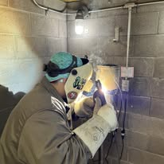

A tankless water heater installation in Boynton Beach makes sense for two kinds of homeowners. The first runs out of hot water when the family showers back to back. The second wants the garage or utility closet floor back. A tankless unit heats water only when a tap opens, so there is no 50 gallon reservoir sitting there losing heat all day. We run tankless water heater installation from same-day plumbing across Palm Beach County and across the county, including Boca Raton and Delray Beach.
Done right, these units run 20 years. Done wrong, they short cycle, throw error codes and scale up within two seasons. The difference is sizing, gas supply and water treatment, not the brand on the box.
We install gas and electric units from Rinnai, Navien and other major manufacturers, and we size them to your real hot water demand rather than a rule of thumb.

Warning signs
When a Tankless Water Heater Is the Right Upgrade
A tankless unit is not automatically better. It is better in these situations.
- Hot water runs out during back-to-back showers
- You want the closet or garage floor space back
- Your tank sits in an attic and you fear a leak
- Two people shower while the dishwasher runs
- You are already replacing a failed tank heater
- Energy bills matter and the house sits empty during the day
- You are remodeling and the gas line is already open
- A guest suite or casita needs its own hot water source
If a single person lives in a one-bathroom condo, a small tank heater is usually the cheaper lifetime choice. We will say so.
What the visit includes
What a Correct Tankless Water Heater Installation Involves
Most tankless problems trace back to a shortcut in one of these four steps.
Demand sizing
We add up your fixtures and set the flow rate and temperature rise the unit must actually deliver in winter.
Gas and electrical
Gas models often need a larger supply line. Electric models need serious amperage. We verify capacity before ordering.
Venting and mounting
Stainless or concentric venting to manufacturer spec, mounted with service clearance and isolation valves for future flushes.
Commissioning
Full flow and temperature test, error code check, and a walkthrough on filter cleaning and descale intervals.
Thinking about going tankless?Call for a sized quote covering the unit, gas or electrical capacity and venting.

Tankless vs tank
Tankless Water Heater or Tank: Comparing Cost, Space and Hot Water Supply
A tankless unit is not automatically the better buy. It is better for specific households, and worse for others. Here is the honest comparison.
Hot water supply
A tank holds a fixed reservoir and runs out. A tankless unit never runs out but has a flow ceiling, measured in gallons per minute. Size it correctly and two showers run comfortably. Undersize it and the temperature sags whenever a second fixture opens.
Space and installation
Tankless units mount on a wall and free up floor area, which matters in a condo utility closet or a tight garage. That gain comes with real installation requirements: larger gas supply for gas models, serious amperage for electric ones, and manufacturer-specified venting.
Running cost and lifespan
There is no standby loss, so a house that sits empty during the day saves noticeably. Service life is around twenty years with annual descaling, roughly double a tank. The upfront cost is higher, and the payback period depends on your usage pattern rather than a brochure figure.
Who should stay with a tank
A single person in a one-bathroom condo, or a household replacing a failed heater on short notice with no gas or panel capacity, is usually better served by a quality tank unit. We will say so rather than sell up.

Boynton Beach conditions
Hard Water and Tankless Units in South Florida
The single biggest threat to a tankless heater here is scale. The heat exchanger runs hot and narrow, so calcium plates onto it faster than it would in a tank. An untreated unit in Palm Beach County can lose efficiency within two years and start throwing flow errors.
The fix is simple and we build it into every install: isolation valves at the unit so it can be flushed with descaling solution, and a recommendation on whether a softener or scale inhibitor is worth adding. Homes on well water west of Military Trail almost always need treatment.
The second local factor is gas availability. Much of Boynton Beach is electric only, with no natural gas at the street. Propane is an option, and modern electric tankless units work well for single-bathroom homes, but a whole-house electric unit needs panel capacity that many 1970s homes do not have. We check the panel before we quote.
Long-term care
Descaling and Servicing a Tankless Water Heater in Hard Water
Scale is the single biggest threat to a tankless unit in Palm Beach County. The heat exchanger runs hot through narrow passages, so calcium plates onto it faster than it would in a tank.
What neglect looks like
Efficiency drops first, quietly. Then flow errors and temperature swings start, and finally the unit throws hard fault codes and shuts down. An untreated heater on local water can reach that point within a few years.
Annual descaling
The fix is a yearly flush with descaling solution circulated through the heat exchanger. It takes about an hour, and it only takes an hour if the installer fitted isolation valves at the unit. We include them on every installation for exactly this reason, and we can retrofit them onto an existing heater.
Filter and vent checks
The inlet screen catches grit and needs rinsing. Venting should be inspected for obstruction and secure joints, and combustion air clearance kept clear of stored items, which is the most common problem we find in garage installs.
Should you add water treatment?
A softener or scale inhibitor ahead of the unit meaningfully extends the descaling interval and protects the exchanger. On well water west of Military Trail it is close to essential. We test hardness before recommending it rather than bundling it automatically.
Pricing
Tankless Water Heater Installation Cost in Boynton Beach
A tankless install costs more than a tank swap up front. The payback comes from lower standby energy loss and a longer service life. We quote the full job, including any gas line upsizing, venting and electrical work, so there are no add-ons later.
If the numbers do not favor tankless for your home, we will tell you and price a high-efficiency tank instead.
| Factor | Keeps the price down | Pushes the price up |
|---|---|---|
| Gas capacity | An existing line already sized for the load | A new run or an upsized meter |
| Venting | A short exterior wall run | A long or complex vent path through finished space |
| Electrical | A gas unit needing only a standard outlet | An electric unit needing new circuits or a panel upgrade |
| Replacing what | Swapping an existing tankless unit | Converting from a tank, which changes the connections |
| Service access | Isolation valves fitted for annual flushing | A tight install with no room to descale |
Start with the phone call. (833) 567-2788 gives the range; the firm number follows once someone has seen it.
Before you call
What to Work Out Before Going Tankless
Three things decide whether a tankless unit will work well in your home, and you can check all three yourself.
- Count the fixtures that might run at once; that sets the flow rate you need.
- Check whether you have gas at the property and what else is already on the line.
- For electric, look at the panel and note the spare breaker space and service size.
- Decide where the unit would sit, with venting and service access in mind.
One thing not to do: Do not size a tankless unit from the box rating alone. A unit that is right for a one-bathroom condo will disappoint a four-bathroom house every time.
Urgency
When Does a Tankless Unit Need Urgent Service?
Most tankless faults show an error code and can wait. Call right away if:
- You smell gas near the unit; leave the building and call from outside.
- The unit is venting exhaust into the room rather than outside.
- Water is running from the body of the unit rather than the relief line.
- It shuts down repeatedly under normal demand, which can indicate a combustion fault.
If any of those describe what you are seeing, call (833) 567-2788 now rather than booking online. Emergency calls are moved to the front of the queue.
FAQs
Tankless Water Heater FAQs
Will a tankless unit really never run out of hot water?
It will not run out, but it does have a flow limit. Size it correctly and you can run two showers at once. Undersize it and the temperature drops.
How often does it need service?
Descale once a year in Palm Beach County water, more often on hard well water. We install isolation valves so the flush is quick.
Can I put one in my garage?
Yes, and it is a common location here. Gas models need proper venting and clearance, which we handle during install.
Do tankless heaters work during a power outage?
No. Gas models still need electricity for ignition and controls. A generator inlet or battery backup solves it.
Is electric tankless a good option?
For a small home or a single bathroom, yes. Whole-house electric units need heavy amperage that older panels often cannot supply.
Do tankless heaters really last twenty years here?
They can, but only if they are descaled annually. Palm Beach County water is hard, and scale on the heat exchanger is what kills these units early. We fit isolation valves at install so the yearly flush is a short service call rather than a teardown.
Related plumbing services
Services Often Combined With a Tankless Upgrade
What tends to come up next, once this job is understood.
Water Heater Repair & Installation
Tankless is not always the right answer. For a small household on a tight budget a conventional tank is often the better buy.
Water Filtration Installation
Scale is what kills tankless units early, so softening the supply is the single best thing you can do for one.
Gas Line Repair and Installation
Most tankless installs fail at the gas supply rather than the unit. The line has to carry the load alongside everything else.
View all 16 plumbing services →
Tankless Water Heater Near You in Palm Beach County
- Tankless Water Heater in Delray Beach
- Tankless Water Heater in Lake Worth Beach
- Tankless Water Heater in Lantana
- Tankless Water Heater in Boca Raton
- Tankless Water Heater in Wellington
- Tankless Water Heater in Greenacres
- Tankless Water Heater in Hypoluxo
- Tankless Water Heater in Ocean Ridge
- Tankless Water Heater in Manalapan
- Tankless Water Heater in Palm Springs
- Tankless Water Heater in West Palm Beach
- Tankless Water Heater in Highland Beach
Thinking about going tankless?
Get a sized quote for your Boynton Beach home, including gas, venting and electrical, with no pressure to switch.